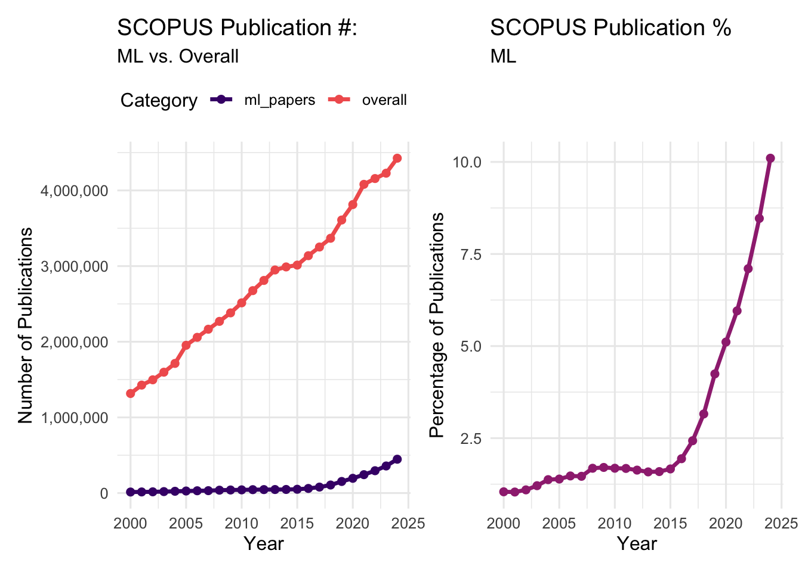
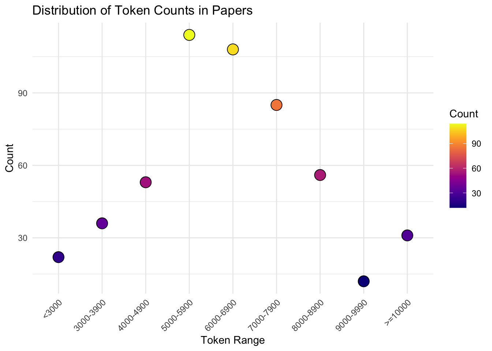

A Need for a Contemporary Field
AI systems are a direct product of the data used to train and evaluate them. We shape the behavior of AI systems with the processes we use to design, gather, analyze, and report the training and evaluation data. Work over the past decade has emerged explaining limitations of commonly re-used datasets, with many commonly used ‘benchmark’ datasets showing a lack of representativeness (Hullman et al., 2022), measurement quality (Jacobs & Wallach, 2021), accounting for the full range of reasonable interpretations in terms of annotations (Cabitza et al., 2023), and completeness in reporting of the annotation process (Geiger et al., 2020, 2021). Although improvements to data collection processes have been proposed, they are at best slowly being adopted, and at worst being largely ignored. The increasingly sophisticated systems we build have an accompanying cost not only in terms of sheer training data size, but also in the labor required to curate it (e.g. large language models)(Kandpal & Raffel, 2025). This is exacerbated by the increasingly sophisticated qualities we aim to evaluate systems on, that in turn are challenging to define and measure (e.g. ‘fairness’) (Jacobs & Wallach, 2021). Furthermore, the human-like behavior of the sophisticated systems we are evaluating are a prime target for anthropomorphistically biased mis-interpretations of their outputs, as many aim to behave similar to humans (Altmeyer et al., 2024).
The future qualities of AI systems will be shaped by the data practices we establish today: the degree to which we invest in better design, collection, and analysis of training and evaluation data will determine the real-world performance of the AI systems we will build. It is thus crucial that we put in place better practices. However, improving how the field collects benchmark data requires substantial efforts beyond the already substantial efforts invested. As an example, the case study in this thesis proposes enriching design, collection, analysis, and reporting of training/evaluation data for AI systems, using knowledge from the social sciences Jacobs & Wallach (2021), metrology (measurement science) (Welty et al., 2019), and work in the computational sciences on ‘ground-truthing’ (Cabitza et al., 2023). It requires a-priori empirical investigation of the data collection process in addition to the data collection process itself, in principle for every combination of construct (i.e. the latent phenomenon of interest being measured), content (e.g. text, video, audio etc. and in some cases also subgroups, e.g. tweets vs. podcast transcripts vs. formal speeches etc.), and for relevant characteristics of annotators (i.e. ethnicity, political affiliation, etc.). Open questions remain for the primary case-study as well as for the field as a whole, all of which anticipate future studies, and by extension further efforts.
Questions remain as to how AI research as it is currently conducted can implement these solutions. As it stands, our current knowledge gathering apparatus - science as it is now practiced and reported - is overburdened. The ever increasing volume of published manuscripts on AI and related topics1 makes it impossible to stay abreast of the overall field: 10% of over 4 million publications indexed on the SCOPUS academic database in 2024, up from around 7% in 2022, had terms related to AI in their title, keywords or abstracts (see Appendix A). The number of submitted manuscripts also increases year over year, with popular conferences like NeurIPS receiving upwards of 12k submissions in 20232. This makes it more and more difficult to find reviewers, and by extension to monitor the overall quality of the field (Zhang et al., 2022). These figures do not include preprints posted on servers like arXiv, which show over 42k works with AI related terms in the abstract for 2024, more than doubling the about 17.5k posts in 2019. PhD candidates, who contribute a substantial proportion of academic work (Larivière, 2012), are bogged down by requirements to write and defend theses despite the decreasing trend of thesis citations over time (Larivière et al., 2008), and evidence that PhD candidates with fixed duration contracts exceed that duration by several months, resorting to completing their thesis on their own time and risking failing at completion (Van de Schoot et al., 2013). Further, publications, and not theses, remain the key factor in the assesment of their value as scientists (Anderson et al., 2022) - efforts which could be put towards meeting some of this labor gap. Predictably, academics appear to be turning to Large Language Models for assistance, as use is showing in academic work in both peer reviews (Liang et al., 2024), and in manuscripts (Gray, 2024). This overburden raises questions beyond the poor evaluation of the models that underlie ‘AI’ to the ‘AI’ research process itself, as well as to its likelihood of applying improvements.
This conclusiory manuscript thus highlights the crucial challenge for academic study of AI in the coming decade: developing an infrastructure that allows for the study of AI, including the data that are its raw materials, with little - or at the very least, substantially less - harmful bias. It highlights the need for identifiable academic publication venues that gather works on the study of ground-truthing, more modern publication formats that allow for dataset requirements to be studied prior to their collection, and for infrastructure that allows the burden of their collection to be distributed among stakeholders. It concludes that, while works like the case study embedded in this thesis are necessary, the various fields studying topics related to AI are poorly positioned to implement them.
Increasing data requirements require curation
Contemporary training methods require increasingly large amounts of training data. Taking the development of Large Language Models as a use-case, the training dataset for Llama 3 included 15T tokens, up from 2T for Llama 2. Although not all details of the datasets have been shared, and setting aside questions of copywrite, licensing, and ethical concerns, any available text that is likely to have some quality is limited compared to these requirements. Among the refined sources of text available, Wikipedia, which comprises some 6.9M English articles, comprised of approximately 62M pages, is an estimated 5 billion tokens3. If we take the approximate 4.4M papers published in 2024 and indexed on Scopus as an indication, academia published an estimated 45B tokens in that year. If we extend our reach to other repositories, e.g. the approximately 88.3 million academic papers available on Sci-hub would result in an approximate upper boundary of estimate 700B or so. A similar figure might be estimated from libegen and the 7.5M4 books there. While academic pursuits clearly result in increasing token counts, we have immediate access to a set of approximately 1.5T. Internet archive has some 44M books, which may yield up to 4.4T, although we expect duplicates with the libgen archive. Thus, a more likely source for the ever-increasing data requirements are repositories like Common Crawl5. But this too has limits, and we are projected to have too little human-generated text to continue the increase in model size this decade (Villalobos et al., 2024).
The largest frontier models cost tens of millions of USD to train, with estimates of GPT-4 at 40M USD for hardware (chips, servers, and networking hardware) and energy, and estimated increases of 2.4 X per year suggesting that frontier models will cost 1B USD to train by 2027 (Cottier et al., 2024). Notably, this cost exceeds annual revenues in companies training large scale LLMs (Kandpal & Raffel, 2025). Human labor responsible for the collection, curation, and eventual annotation of training data in addition to the training of the model (including researchers, engineers, and managers, but not data center employees and operations staff) is estimated at 29%-49% of the overall cost (Cottier et al., 2024). Notably, these cost calculations ignore the cost of producing the text itself, and though its value is difficult to calculate, estimates range from 10-1000 X more than the total cost of the training of the models (Kandpal & Raffel, 2025). In other words, the more valuable thing is the data and not the model, and the lack of appropriate compensation for its use has given rise to a number of lawsuits (e.g. Authors Guild vs. OpenAI 6).
Thus, the field of AI must wrestle with two opposing issues: we want to train them with data that has high quality - e.g we want the data to be representative of conditions where the model will be deployed, and thus relevant distributions in the training data must reflect the environment in which the models will be deployed (Hullman et al., 2022), but the data requirements to train them appear thus far to be ever-increasing (Villalobos et al., 2024). We want the data used in training to be ‘good’ because we want the models to be ‘trustworthy’ - in the case of LLMs, we want to have reason to think they will generate text that includes claims that we think are true. Perhaps our closest approximation to ‘what we think is true’ is contained the overall perspective presented in all of academic work - the estimating probability of the truth of potential explanations given carefully collected and analyzed observations. And yet, even if there were little to no barriers to using all of human academic text to train LLMs, this amount of text pales in quantity to the vastness of crawled text on the internet. Thus the creation and curation of load-bearing training datasets is a central issue, despite the overwhelming focus on algorithmic work (Birhane et al., 2022).
Increasing Data Quality Requires Focused Study
Datasets for evaluation very often contain human input (Geiger et al., 2020, 2021). Unlike the field of Machine Learning, other disciplines (psychology, economics, software engineering) have entire fields dedicated to the design, collection, analysis, and reporting of data that involves human behavior (psychometrics, econometrics, software testing). Despite growing recognition of dataset problems (Hullman et al., 2022), which in turn have the potential to lead to harms (Mehrabi et al., 2021), actual progress toward better ground-truth data practices, from collection, to analysis remains slow. Current incentives prioritize accuracy and efficiency rather than careful measurement design or long-term dataset stewardship (Birhane et al., 2022).
When collecting annotations, labels, or other forms of input from people in order to construct training/evaluation datasets, we are attempting to collect measurements of latent, unobservable constructs (Jacobs & Wallach, 2021). In other words, when we consider the input from multiple people in aggregate, we do not directly observe e.g. the presence or absence of an object in a digital image; rather we observe the probability that a person from a given population will indicate the presence of absence of the object in the image (Welty et al., 2019). In the parlance of psychology, one cannot directly observe an other’s Extraversion score, as one might observe an other’s height. Although height is observable, our measurements of it are still imperfect: in using a measurement device like a ruler multiple times, should we measure precisely enough, we would like observe variance in each measurement, with the true score for height imperfectly represented by our imperfect measurements (Welty et al., 2019).
Any standardized procedure for comparing two or more individuals is treated like a measurement instrument in the social sciences (Urbina, 2014). The repeatable procedures that we use to gather annotations are similarly measurement instruments (Beck et al., 2022). Given the complexity of measuring unobservable phenomena, instruments are subjected to scrutiny prior to being considered usable for their intended purpose. The process of construct validation involves estimating the extent to which an instrument measures an unobservable construct (Wehner et al., 2020). It assumes an unknowable true score, and that all attempts to measure the true score are imperfect. Thus there is no single solution to demonstrating the validity of a construct, but rather an accumulation of evidence, across multiple studies, with observations made using different methods (Smith, 2005). Thus, by extension the datasets that we collect and use to benchmark the performance of models, are similarly measurement instruments (Welty et al., 2019).
The cost of collecting meaningful, high-quality datasets — particularly for complex constructs like values, intentions, or intelligence — is underappreciated and underfunded. [Thesis contributions here.] Whether a simple or complex ground-truthing problem, treating the phenomenon of interest like a construct has benefits. Collecting good data is expensive, but neglecting this cost leads to cascading problems in AI evaluation.
Without better practices, datasets remain opaque, unexamined, and prone to embedding systemic biases from the start.
Lessons from Other Fields: Registered Reports and the Science of Measurement
- In fields like psychology and medicine, Registered Reports emerged to separate the design of a study from its results, reducing biases like hindsight bias and outcome switching.
- Other fields actively study how to measure complex constructs: e.g., psychometrics for cognitive ability, epidemiology for disease burden, and criminology for recidivism. These fields show that developing good measurement instruments is a dedicated scientific effort — not a side activity.
- If AI research depends critically on ground-truth data, then the field needs a dedicated research agenda focused on ground-truth design and measurement science. Beyond lessons learned in other fields are ground-truthing specific questions.
Biases in AGI Research Highlight the Need for Careful Grounding
- In our ICSE-SEIS 2023 paper, we critique unscientific performance claims in AGI-related work.
- AGI research is especially vulnerable to confirmation bias, wishful thinking, and premature performance claims without rigorous benchmarks.
- Defining the constructs we aim to measure (e.g., “intelligence” in LLMs) must be a scientific task in itself. Intelligence may manifest differently in AI systems than in humans, requiring new conceptualizations and new measurement instruments.
- Without careful construct definition and measurement, claims about AGI capabilities risk being scientifically meaningless.
Micropublication Models: Capturing Data Collection as a First-Class Output
- Micropublications are modular, peer-reviewed publications that focus on specific research artifacts like datasets, annotation protocols, or measurement plans.
- Extending the Registered Reports model, we can approve data collection protocols before data is collected, including sampling design, measurement instruments, and annotation strategies.
- Decentralized contributors (e.g., multiple labs or individuals) could publish individual datasets under a shared, peer-reviewed protocol.
- This would move ground-truth collection toward transparent, modular, and cumulative science, rather than isolated, one-off efforts.
Building Infrastructure for Transparent Ground Truth
- Our SEIS 2023 paper pushes for open, linked, reproducible artifacts, not just final models or results.
- Our CHI 2023 paper critiques the opacity of machine learning artifacts and calls for linking data, documentation, and transparent evaluation processes.
- Alexandria:
- A web platform combining Wikipedia-style collaborative editing with GitHub-style version control.
- Supports the CREDIT taxonomy for structured contributor recognition.
- Proof of concept: Built almost entirely by student developers under supervision, showing that decentralized academic innovation is possible.
- A few additional steps would yield a fully operational infrastructure supporting micropublication of ground-truth artifacts.
The Vision: Toward Responsible Ground Truth for AI and AGI
- Researchers pre-register their ground-truth collection plans, including constructs, instruments, and expected properties of the data.
- Peer-reviewed protocols are made public before data collection.
- Annotators, coders, and dataset curators are properly credited through micropublications.
- Datasets grow openly, collaboratively, with tracked provenance and version control.
- This infrastructure builds trustworthy, reproducible foundations for the next generation of AI and AGI research.
Concluding Call to Action
- The AI/ML research community, conferences, funding agencies, and publishers must recognize ground-truth data creation as a first-class research contribution.
- New formats like data-focused Registered Reports and micropublications should be adopted.
- Better data design enables better science, more responsible innovation, and safer, more meaningful AI systems.
It’s the ‘real’ world of publication that matters. As Larivière (2012) note, a thesis defense is a more curated experience as the ‘peer reviewers’ are chosen by the supervisors of the student - on the other hand, peer reviewers in the world of academic publication are far broader than the networks of the PhD candidate’s supervisory staff. One study in Canada in 2012 showed that one third of all academic output comes form PhD students (Larivière, 2012). One study showed the decline of citations of PhD theses over time (Larivière et al., 2008). Perhaps there are other, more productive ways to contribute rather than taking the time to write a thesis.
Appendix
Appendix A: Citation Trends Plot
Appendix B: Search terms
SCOPUS:
for AI related topics: TITLE-ABS-KEY ( ( ( ( machine OR deep OR reinforcement OR supervised OR unsupervised ) AND learning ) OR ( “neural networks” ) OR ( ai OR “artificial intelligence” ) ) ) AND PUBYEAR > 1999 AND PUBYEAR < 2027
for overall publication records: PUBYEAR > 1999 AND PUBYEAR < 2027
arXiv:
[Abstract] AI or “artificial intelligence” OR machine AND learning OR supervised AND learning OR reinforcement AND learning OR neural AND networks
17,459 results in 2019 23,923 results in 2020 27,610 results in 2021 29,690 results in 2022 33,419 results in 2023 42,183 in 2024
Appendix C: Token estimates
Taking a study on the word length requirements of education journals as a proxy, Fairbairn et al. (2009) report the following figures:

# Estimate midpoints for each bin
midpoints <- c(2500, 3450, 4450, 5450, 6450, 7450, 8450, 9500, 10500)
# Add midpoints to the dataframe
paper_lengths$Midpoint <- midpoints
# Estimate mean token count
mean_est <- sum(paper_lengths$Midpoint * paper_lengths$Count) / sum(paper_lengths$Count)
# Calculate weighted variance
var_est <- sum(paper_lengths$Count * (paper_lengths$Midpoint - mean_est)^2) / sum(paper_lengths$Count)
# Take square root to get standard deviation
sd_est <- sqrt(var_est)
# Print result
paste()character(0)print(paste("SD words: ", sd_est))[1] "SD words: 1925.27260683454"print(paste("Mean words: ", mean_est))[1] "Mean words: 6342.166344294"https://help.openai.com/en/articles/4936856-what-are-tokens-and-how-to-count-them?utm_source=chatgpt.com According to Open AI, a token is 3/4 of a word
sd_tokens <- sd_est*1.25
mean_tokens <- mean_est*1.25
print(paste("SD Tokens: ", round(sd_tokens, 2)))[1] "SD Tokens: 2406.59"print(paste("Mean Tokens: ", round(mean_tokens, 2)))[1] "Mean Tokens: 7927.71"paste( round(((mean_tokens-sd_tokens) * 4500000) / 1000000000, 2),
" Billion to",
round (((mean_tokens+sd_tokens) * 4500000) / 1000000000, 2),
"Billion tokens per year from academia.")[1] "24.85 Billion to 46.5 Billion tokens per year from academia."paste( 4.8*1.25, "Billion tokens from Wikipedia.")[1] "6 Billion tokens from Wikipedia."Wikipedia: https://en.wikipedia.org/wiki/Wikipedia%3ASize_of_Wikipedia?utm_source=chatgpt.com
5000000000/2000000000000*100[1] 0.25Sci Hub: https://www.sci-hub.mk/ 88343822 documents as of 9 May 2025 13:47.
(7927.71 * 88343822) / 1000000000 [1] 700.3642https://www.theatlantic.com/technology/archive/2025/03/libgen-meta-openai/682093/ LibGen
7.5 million books and 81 million research papers.
# at about 100k words per book
(100000*7500000) / 1000000000[1] 750(100000*44000000) / 1000000000[1] 4400Llama 2 was 2T tokens, Llama 3 was 15T. I didn’t really see where they got their data from. So I made some guesses.
Looked at Wiki. The whole thing is like 5B.
Sci-Hub, 88.3M papers, which at 8kish tokens is an upper boundary of 700B or so.
7.5 million books on libgen you get about another 700B or so, at 100k-ish per words.
Internet archive has some 44 million books. 4.4T.
References
Altmeyer, P., Demetriou, A. M., Bartlett, A., & Liem, C. (2024). Position: Stop making unscientific AGI performance claims. arXiv Preprint arXiv:2402.03962.
Anderson, C. G., McQuaid, R. W., & Wood, A. M. (2022). The effect of journal metrics on academic resume assessment. Studies in Higher Education, 47(11), 2310–2322.
Beck, J., Eckman, S., Chew, R., & Kreuter, F. (2022). Improving labeling through social science insights: Results and research agenda. International Conference on Human-Computer Interaction, 245–261.
Birhane, A., Kalluri, P., Card, D., Agnew, W., Dotan, R., & Bao, M. (2022). The values encoded in machine learning research. Proceedings of the 2022 ACM Conference on Fairness, Accountability, and Transparency, 173–184.
Cabitza, F., Campagner, A., & Basile, V. (2023). Toward a perspectivist turn in ground truthing for predictive computing. Proceedings of the AAAI Conference on Artificial Intelligence, 37, 6860–6868.
Cottier, B., Rahman, R., Fattorini, L., Maslej, N., Besiroglu, T., & Owen, D. (2024). The rising costs of training frontier AI models. arXiv Preprint arXiv:2405.21015.
Fairbairn, H., Holbrook, A., Bourke, S., Preston, G., Cantwell, R., & Scevak, J. (2009). A profile of education journals. AARE 2008 International Educational Research Conference, 1–20.
Geiger, R. S., Cope, D., Ip, J., Lotosh, M., Shah, A., Weng, J., & Tang, R. (2021). " garbage in, garbage out" revisited: What do machine learning application papers report about human-labeled training data? arXiv Preprint arXiv:2107.02278.
Geiger, R. S., Yu, K., Yang, Y., Dai, M., Qiu, J., Tang, R., & Huang, J. (2020). Garbage in, garbage out? Do machine learning application papers in social computing report where human-labeled training data comes from? Proceedings of the 2020 Conference on Fairness, Accountability, and Transparency, 325–336.
Gray, A. (2024). ChatGPT" contamination": Estimating the prevalence of LLMs in the scholarly literature. arXiv Preprint arXiv:2403.16887.
Hullman, J., Kapoor, S., Nanayakkara, P., Gelman, A., & Narayanan, A. (2022). The worst of both worlds: A comparative analysis of errors in learning from data in psychology and machine learning. Proceedings of the 2022 AAAI/ACM Conference on AI, Ethics, and Society, 335–348.
Jacobs, A. Z., & Wallach, H. (2021). Measurement and fairness. Proceedings of the 2021 ACM Conference on Fairness, Accountability, and Transparency, 375–385.
Kandpal, N., & Raffel, C. (2025). Position: The most expensive part of an LLM should be its training data. arXiv Preprint arXiv:2504.12427.
Larivière, V. (2012). On the shoulders of students? The contribution of PhD students to the advancement of knowledge. Scientometrics, 90(2), 463–481.
Larivière, V., Zuccala, A., & Archambault, É. (2008). The declining scientific impact of theses: Implications for electronic thesis and dissertation repositories and graduate studies. Scientometrics, 74(1), 109–121.
Liang, W., Izzo, Z., Zhang, Y., Lepp, H., Cao, H., Zhao, X., Chen, L., Ye, H., Liu, S., Huang, Z., et al. (2024). Monitoring ai-modified content at scale: A case study on the impact of chatgpt on ai conference peer reviews. arXiv Preprint arXiv:2403.07183.
Mehrabi, N., Morstatter, F., Saxena, N., Lerman, K., & Galstyan, A. (2021). A survey on bias and fairness in machine learning. ACM Computing Surveys (CSUR), 54(6), 1–35.
Smith, G. T. (2005). On construct validity: Issues of method and measurement. Psychological Assessment, 17(4), 396.
Urbina, S. (2014). Essentials of psychological testing. John Wiley & Sons.
Van de Schoot, R., Yerkes, M. A., Mouw, J. M., & Sonneveld, H. (2013). What took them so long? Explaining PhD delays among doctoral candidates. PloS One, 8(7), e68839.
Villalobos, P., Ho, A., Sevilla, J., Besiroglu, T., Heim, L., & Hobbhahn, M. (2024). Position: Will we run out of data? Limits of LLM scaling based on human-generated data. Forty-First International Conference on Machine Learning.
Wehner, C., Roemer, L., & Ziegler, M. (2020). Construct validity. In V. Zeigler-Hill & T. K. Shackelford (Eds.), Encyclopedia of personality and individual differences (pp. 875–878). Springer International Publishing. https://doi.org/10.1007/978-3-319-24612-3_1288
Welty, C., Paritosh, P., & Aroyo, L. (2019). Metrology for AI: From benchmarks to instruments. arXiv Preprint arXiv:1911.01875.
Zhang, Y., Yu, F.-Y., Schoenebeck, G., & Kempe, D. (2022). A system-level analysis of conference peer review. Proceedings of the 23rd ACM Conference on Economics and Computation, 1041–1080. https://doi.org/10.1145/3490486.3538235
Footnotes
terms included AI, artificial intelligence, machine learning, and neural networks. See Appendix for specific search strings.↩︎
https://github.com/tranhungnghiep/AI-Conference-Info?utm_source=chatgpt.com↩︎
According to The Atlantic.↩︎
https://commoncrawl.org/↩︎
https://authorsguild.org/app/uploads/2023/12/Authors-Guild-OpenAI-Microsoft-Class-Action-Complaint-Dec-2023.pdf↩︎